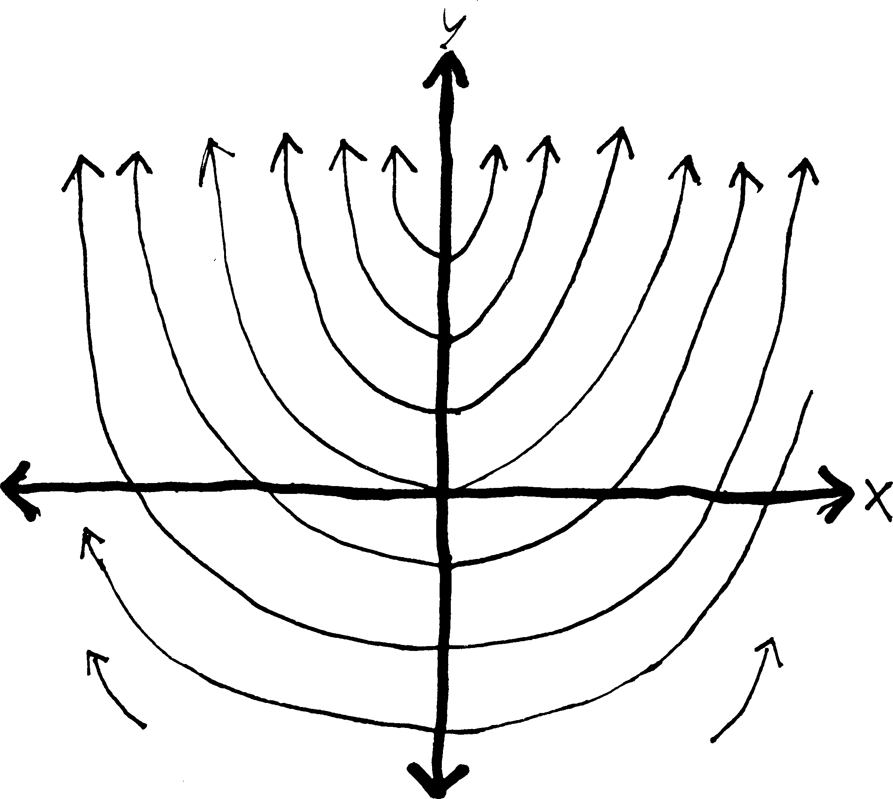
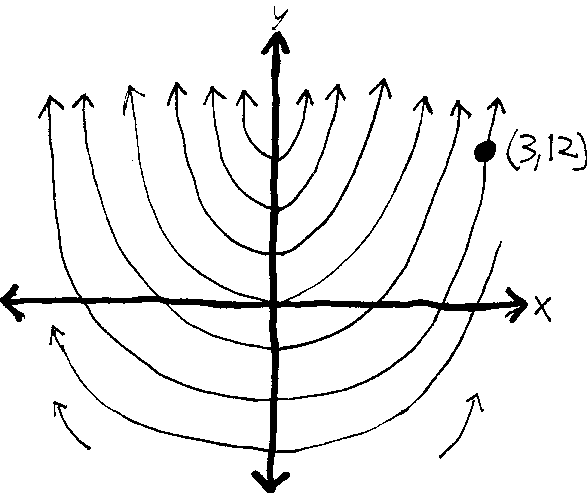

baby diff eqs
Here’s David Foster Wallace on differential equations:
…the #1 math tool for solving problems in physics, engineering, telemetry, automation, and all manner of hard science. You usually just start flirting with D.E.’s at the end of freshman math; it’s in Calc III that you find out how ubiquitous and difficult they really are.
In a broad sense, differential equations involve relationships between an independent \(x\), a dependent \(y\), and some derivative(s) of \(y\) with respect to \(x\). D.E.’s can be thought of either as integral calc on some sort of Class IV hallucinogen or (better) as “metafunctions,” meaning one level of abstraction up from regular functions—meaning in turn that if an ordinary function is a sort of machine where you plug certain numbers in and get other numbers out, a differential equation is one where you plug certain functions in and get other functions out. The solution of a particular differential equation, then, is always some function, specifically one that can be substituted for the D.E.’s dependent variable to create what’s known as an “identity,” which is basically a mathematical tautology.
That may not have been too helpful. In more concrete terms, a simple differential equation like \(\displaystyle \frac{dy}{dx} = 3x^2 -1\) has as its solution that function for which \(3x^2 - 1\) is the derivative. This means what’s now required is integration, i.e. finding just the function(s) that satisfies \(\int (3x^2 - 1)dx\). If you’ve retained some freshman math, you’ll probably see that \(\int(3x^2-1)dx\) equals \(f(x) = x^3 - x + C\) (with \(C\) being the infamous Constant of Integration), which equation is the same as \(y = x^4 - x + C\), which latter just so happens to be the general solution of the differential equation \(\displaystyle \frac{dy}{dx} = 3x^2 -1\). This D.E.’s particular solutions will be those functions in which \(C\) takes on some specific value, as in like \(y = x^3 - x + 2\) and so on.
Graphwise, because of \(C\) and the general/particular thing, differential equations tend to yield `families of curves’ as solutions…1
Suppose you’re a mathematical archaeologist. You run across the petrified derivative of a function, \(\displaystyle \frac{dy}{dx} = 2x\), and you want to reconstruct the original function whence this derivative came (as an entertaining exhibit to museum-goers).
Well, obviously, you just take an antiderivative, and you get \(y = x^2 + C\). You don’t really know which function the derivative came from—it could have been \(y = x^2\), or \(y = x^2 - 8\), or \(y = x^2 - 300,456\)—so you instead just write \(y = x^2 + C\), where \(C\) can be any real number. So really, you get not a single function, but a whole collection of related functions. If you wanted to, you could graph a bunch of them. Below, I’ve graphed a bunch of them (in the cases that \(C\) is an integer):

But what if we know a bit more about this ancient function? Sometimes when archaeologists dig up ancient beasts, they find other things in their stomachs. Like, they dig up a t-rex, and find the tiny chewed-up boney remains of a baby triceratops in its stomach. And they conclude: t-reges must have eaten baby triceretopes! So they can make the diorama in the museum more accurate, by showing a t-rex not just wandering through the wild but pursuing a baby tricerotops.
We can do the same thing with functions. What if we know not only that we have a function whose derivative is \(2x\), but that that function passed through the point \((1,4)\)? Then we can take our original set of possible functions, and reduce them to just a single function! We can, essentially, pin our possibilities down to a single function:

There is only one function that both has a derivative of \(2x\) and passes through \((3,12)\)! We have pinned it down! “And when I am formulated, sprawling on a pin / When I am pinned and wriggling on the graph…” We can find the function algebraically simply by plugging in \(12\) for \(y\) and \(3\) for \(x\):
\[y = x^2 + C\] (we take an antiderivative) \ \[12 = (3)^2 + C\] (plug in the point we know) \ \[12 = 9 + C\] (solve for C) \ \[C = 3\] \[y =x^2 + 3\] (and then plug C back in to our original eq’n)
There we go! So we can put the function \(y = x^2 + 3\) on display in our museum of functions.
By the way, when we’re doing stuff with differential equations, it’s usually easier to use Leibniz notation for derivatives (i.e., \(\frac{df}{dx}\)) rather than prime/Lagrange notation (\(f'(x)\)). You’ll see why in a bit. Also, the “point” that we plug into the general solution to find the particular solution goes by a couple different names: often it’s called the initial condition or boundary condition, or sometimes the constraint. And it’s given in a variety of different ways:
- passes through \((3,12)\)
- \(y=12\) when \(x=3\)
- \(f(3) = 12\)
- \(y_0 = 12\), \(x_0 = 3\) (The subscript zeroes here imply a sort of “initiality,” I guess.)
These all mean the same thing. Sometimes you might need (and might be given) multiple conditions and multiple points to plug in.
Anyway. If you’re just taking an antiderivative, solving a differential equation is basically straightforward (at least as far as antidifferentiation is straightforward). But what if you have a mathematical fossil that’s a little more complicated? For example, you’re digging out in Inner Mongolia, and you stumble across what appears to be a previously-unknown species of dinosaur: \(\frac{dy}{dx} = y\). Here we have some function (\(y\)) that’s equal to its own derivative (\(dy/dx\)). What function could that be? What’s a function that is its own derivative? How about \(y = e^x\)?
You continue your dig, and keep finding stranger and stranger critters. What about \(\frac{dy}{dx} = 2y\)? A function that’s twice its derivative? What would make that work? \(y = e^{0.5x}\)? That works. \(\frac{dy}{dx}\) in that case will be \(0.5e^{0.5x}\), which is half of the original function.
Is there a more systematic way of doing this? Or are we fated to forever guess-and-check, imprisoned by the luck (or unluck) of our intuition? Thankfully, for some simple differential equations, we can come up with a procedure for doing this. We can treat the \(dy\) and \(dx\) in a derivative like algebraic objects—like numbers and variables and such—and move them around and add and subtract and multiply and divide them just like we can with numbers and variables! And then we can integrate them. And then we can solve for \(y\), and get a function!
Imagine we have something really simple like: \[\displaystyle \frac{dy}{dx} = 2x\] We can rewrite this as just: \[dy = 2x \, dx\] and then we can integrate! \[\int dy = \int 2x \, dx\] which is the same as: \[\int 1 dy = \int 2x \, dx\] \[y + C = x^2 + C\] but really, each integration constant is different, so we should treat them differently. We’ll label the one on the left as \(C_1\) and the one on the right as \(C_2\) \[y + C_1 = x^2 + C_2\] so then we have \[y = x^2 + C_2 - C_1\] or just \[y = x^2 + (C_2 - C_1)\] But since our constants of integration are arbitrary to begin with, subtracting them doesn’t make a difference. One arbitrary real number minus another arbitrary real number is just some other, equally-arbitrary real number. So we may as well just write this as \[y = x^2 + C\] Now, obviously, you can do this without having to go through this method (formally known as “separation of variables”). But what if you had something like what we just talked about—like \(\frac{dy}{dx} = y\)? Maybe if you’re lucky, you could stare at it for a while and figure out the answer. But if you want an actual procedure for figuring it out, then this method is very helpful. Let me illustrate it:
\[\displaystyle \frac{dy}{dx} = y\] Separating: \[\displaystyle dy = y\cdot dx\] Putting all \(y\)’s on one side and all \(x\)’s on one side: \[\displaystyle \frac{dy}{y} = dx\] Rewriting: \[\displaystyle \frac{1}{y}dy = 1\cdot dx\] Integrating: \[\displaystyle \int \frac{1}{y}dy = \int 1 \,dx\] Only need to have a constant on one side, since it can account for both constants: \[\ln(y)= x + C\]
So now we have an equation relating \(y\) and \(x\) without any derivatives! This is a partial success. We have \(y\) defined implicitly in terms of \(x\). But what we really want is an explicit equation for \(y\), meaning, an equation with just a naked \(y\) on one side. The best way to do this here is just to exponentiate both sides by \(e\): \[e^{\ln y} = e^{x + C}\] Because then the \(e^{\text{stuff}}\) and \(\ln(\text{stuff})\) will cancel out on the left side, and we’ll just have: \[y = e^{x + C}\] Which is great! We’ve got a function for \(y\) in terms of \(x\)! By convention, though, most people rewrite \(e^{x+C}\) in the following way: they split it up using properties of exponents: \[y = e^xe^C\] and then, since \(C\) is a constant, then \(e^C\) is also a constant, and we may as well write it with a single letter… let’s call \(e^C\) \(A\). Then we’ll have: \[y = Ae^x\] Yay! We’re done! So we’ve shown, then, that any function that is its own derivative (\(dy/dx = y\)) must just be \(e^x\) (possibly times some constant \(A\))! Note that this doesn’t give us a single function—it gives us a whole collection of functions, depending on what \(A\) is. If we had a specific point, we could plug that in, and find a specific function.
Let’s do another example. This example will be somewhat more complicated, and we’ll be given a point the function passes through, and so we’ll be able to solve for a single function. There are, in fact, two different ways of going from the general solution (e.g., \(y = Ae^x\)) to the particular solution (e.g., \(y = 5e^x\)), and so I’ll explain both ways. Imagine we have: \[\frac{dy}{dx} = 2xy + 5y \,\,\,\, \text{and the point}\,\,\,(0,7)\] Then we can solve for \(y\)! Rewriting: \[\frac{dy}{dx} = y(2x + 5)\] Separating: \[dy = y(2x + 5)dx\] Putting all \(y\)’s on one side and all \(x\)’s on one side: \(\frac{dy}{y} = (2x + 5)dx\)$ Integrating: \[ \int \frac{dy}{y} = \int (2x + 5)dx\] Working out the integral: \[\ln(y) =x^2 + 5x + C\] Solving for \(y\): \[e^{\ln(y)} =e^{x^2 + 5x + C}\] Etc.: \[y =e^{x^2 + 5x + C}\] Let’s make it nicer on the right: \[y =e^{x^2 + 5x}e^C\] Etc.: \[y =Ae^{x^2 + 5x}\] Etc.: \[y =Ae^{x(x+5)}\]
So now we have the general solution, \(y = Ae^{x(x+5)}\). This gives us a collection of related curves, curves which all look the same except for this vertical expansion/compression by a factor of \(A\). But we know one more thing about this function: we know that it passes through the point \((0,7)\). So we can use that extra bit of information to pin the particular solution down. There are two ways we can do this. We can either use our traditional method:
Plug in 0 for x and 7 for y:
\[7 = Ae^{0(0+5)}\]
Simplify:
\[7 = Ae^0\]
Now we’ve found A:
\[7 = A\]
So we can plug it back into the general sol’n and find the particular sol’n:
\[y = 7e^{x(x+5)}\] Alternatively, we could have done it in this way. Back when we integrated, we could have done a definite integral—i.e., not just taken an antiderivative, but taken an integral from one point to another point. We could have done it in this way: ⋮
Putting all y’s on one side and all x’s on one side:
\[\frac{dy}{y} = (2x + 5)dx\]
Integrating from y=7 to y, and from x=0 to x:
\[\int_7^y \frac{dy}{y} = \int_0^x (2x + 5)dx\]
Working out integral. Look, ma, no constant!
\[\ln(y) - \ln(7) = (x^2 + 5x) - (0^2 + 5\cdot0)\]
Cleaning up:
\[\ln(y) - \ln(7) = x^2 + 5x\]
Properties of logs:
\[\ln\left(\frac{y}{7}\right) = x^2 + 5x\]
Solving for y:
\[e^{\ln(y/7)} = e^{x^2 + 5x}\]
Solving for y:
\[\frac{y}{7} = e^{x^2 + 5x}\]
Etc.:
\[y = 7e^{x^2 + 5x}\] See? Same answer! Of course, we should have been a bit less sloppy with our notation, and we really shouldn’t have had a \(y\) and an \(x\) in the bounds of the integrals that also had a \(y\) and an \(x\) in them. Remember how, in the proof of the FTC, we wanted to take an integral from \(0\) to \(x\), and so we changed the function from \(f(x)\) to \(f(t)\) just to avoid ambiguity? We probably should have done the same thing here: \[ \int_7^y \frac{dt}{t} = \int_0^x (2t + 5)dt\] And so forth. Of course, we would have gotten the same answer.
Let’s speak a bit more generally about this procedure we’ve been discussing. Formally, a differential equation is separable if it can be written in the form: \[\frac{dy}{dx} = f(x)\cdot g(y)\]where \(f(x)\) is any function of \(x\) and \(g(y)\) is any function of \(y\). Then, we can always solve it simply by rearranging:\[\frac{1}{g(y)}\cdot dy = f(x)\cdot dx\]and integrating:\[\int \frac{1}{g(y)}\cdot dy = \int f(x)\cdot dx\]Of course, this requires that we be able to find an antiderivative (which we might not be able to do) and then algebraically solve for \(y\) (which we might not be able to do), and in any case, not every differential equation is separable. For example, consider \(\displaystyle \frac{dy}{dx} = y + x\). Try writing this so that the \(dx\) and all the \(x\)’s are on one side, and the \(dy\) and all the \(y\)’s are on the other side. Try it. I dare you.
No luck? Yeah, it’s impossible2. Basically, with differential equations we get all the difficulties of taking integrals, but even more so. Think our methods for finding antiderivatives are haphazard and ad hoc? Methods for solving differential equations are even worse. If you take a differential equations course in college (please don’t—save yourself and take algebraic topology or something instead), you’ll learn a whole bunch of random, ad hoc formulas for solving certain types of differential equations, but you won’t learn a general method (no such method exists), and then you’ll go out into the real world (meaning, other classes) and find out that the differential equations you need to solve you don’t actually know how to solve, because the diff. eqs. that you really really want to solve can’t be solved.
Perhaps the most famous example is the three-body problem. Here’s the question: if you have two objects, and some force between them, you can predict the positions of both objects. For example, if you have a sun and a single planet rotating around it (mutually attracted by gravity), and you know the right initial conditions (mass, initial momentum, etc.), you can set up a fairly simple differential equation to predict their position, and solve it. Newton did it. (It takes a little bit of work, otherwise I’d show it here, but you can look it up. All you really need is Newton’s second law (force \(=\) mass \(\cdot\) acceleration). Acceleration is a derivative, a second derivative (\(a = \frac{d^2x}{dt^2}\)), and so that’s where the differential equation comes from.)
Another example, at the opposite extreme of size, comes from quantum mechanics. A hydrogen atom consists of just a proton and an electron orbiting each other, with quantum-mechanical forces in between them. We can “solve” the hydrogen atom exactly, and find out quite a bit about its properties.
But what if we have three objects? What if we have a sun and two planets? Or a nucleus with two electrons (like a helium atom)? As it turns out, we can’t solve a three-body equation exactly. Unlike the two-body case, we can never come up with an equation that predicts the motion of three objects, when there are forces between all three of them! We can estimate their motion using a computer, of course, but we can’t actually come up with a nice, beautiful, algebraic solution. And the interesting thing that happens when you simulate the solution with a computer is that… well, so, when you have two bodies orbiting each other, their motion is very nice and predictable. They both follow simple ellipses. But when you have three bodies orbiting each other… their motion is somewhat unpredictable. They don’t always return to the same positions. They don’t behave totally randomly, but they don’t behave predictably, either. Their behavior is chaotic! And in fact, with differential equations and \(n\)-body problems is where the mathematical study and description of chaos theory begins.
But that’s for another day. Back to separable diff. eqs. They may encompass only a small number of all the possible differential equations, but they’re a good starting point. There are some problems in the back that will give you practice.
Here’s a somewhat harder type of differential equation: what if you have, like\[\frac{dy}{dx} + 2y = 3\]Your first temptation is probably to try to separate this. But you won’t be able to. Crap. So here’s another way of thinking about this: is there anything we could multiply both sides of this equation by that would suddenly make it possible to take an integral of both sides? What I mean is this: Imagine we multiply both sides by \(e^{2x}\). Since we’re multiplying both sides by the same thing, it won’t actually change the equation. But it will make it easier to solve! We’ll have this: \[\begin{align*} e^{2x}\cdot \left(\frac{dy}{dx} + 2y\right) &= \left(3\right)\cdot e^{2x}\\ e^{2x}\cdot \!\frac{dy}{dx} \,\,+\,\, 2e^{2x}\cdot \!y &= 3e^{2x} \end{align*}\]And then, if you look very closely at this, you might notice something interesting about the left side: IT LOOKS LIKE SOMETHING THAT’S BEEN PRODUCT-RULED!!! It looks like:\[\frac{d}{dx}\left( ye^{2x} \right) = 3e^{2x}\]You might not be able to see this immediately; stare at those last two equations for a few moments until you can see it. But what’s cool is that now we can integrate it! We know how to find the antiderivative of the left side—the antiderivative of a derivative is just the original function—and we certainly can find the antiderivative of \(3e^{2x}\). So we’ll have:
Integrating both sides w/r/t x:
\[\int \frac{d}{dx}\left( ye^{2x} \right) \, dx = \int 3e^{2x} \, dx\]
Integration & differentiation are inverse fxns and will cancel on left—antiderivative of a derivative:
\[ye^{2x} = \int 3e^{2x} \, dx\]
Integrating on right side:
\[ye^{2x} = \frac{3}{2}e^{2x} + C\]
Solving for y:
\[y = \frac{1}{e^{2x}}\left(\frac{3}{2}e^{2x} + C \right)\]
Rearranging:
\[y = \frac{3}{2} + Ce^{-2x}\]
Yay! Now we’ve solved this otherwise-nasty differential equation! (If we knew a point that the function passed through, we could plug it in and solve for \(C\); otherwise, we’re left with this general class of solutions.) If we wanted to check to make sure that this is indeed a solution, we could just take a derivative and then plug it back into our original equation: We know:
\[y = \frac{3}{2} + Ce^{-2x}\]
So then:
\[\frac{dy}{dx} = -2Ce^{-2x}\]
Our original diff. eq. was:
\[\frac{dy}{dx} + 2y = 3\]
So if we plug dy/dx in:
\[(-2Ce^{-2x}) + 2y = 3\]
And if we also plug y in:
\[(-2Ce^{-2x}) + 2\left(\frac{3}{2} + Ce^{-2x}\right) = 3\]
So if we simplify the left side:
\[(-2Ce^{-2x}) + 3 + 2Ce^{-2x} = 3\]
\[-2Ce^{-2x} + 3 + 2Ce^{-2x} = 3\]
\[3 = 3\]
Yay! It works!
The point is that this is an example of a more general type of differential equation, known as linear first-order equations3. Defined formally, they are differential equations of the form (written in both notations): \[\frac{dy}{dx} + p(x)y = q(x) \hspace{1cm}\text{or}\hspace{1cm} y' + p(x)y = q(x)\] (Where \(p\) and \(q\) are both functions of \(x\).) We can’t separate these equations. They can be kind of nasty to solve. But what we can do instead is to try to find something to multiply both sides of the equation by that makes both sides something we can integrate. In the last example, we multiplied both sides by \(e^{2x}\). Let’s do another example. This one is much harder. Imagine we have: \[(1+t^2)\frac{dy}{dt} + 3ty - 6t = 0\] We want, ultimately, to solve this for \(y\); we want to find a function for \(y\) in terms of \(t\) such that this differential equation is true. Let’s start by making this look a little more like our first example. Let’s divide everything by \(1+t^2\) so that we have the \(\frac{dy}{dt}\) part by itself: \[\frac{dy}{dt} + \frac{3ty}{1+t^2} - \frac{6t}{1+t^2} = 0\] And now let’s move the part with only the \(t\) in it to the other side: \[\frac{dy}{dt} + \frac{3ty}{1+t^2} = \frac{6t}{1+t^2}\] And make the \(y\) in the second term a little more explicit: \[\frac{dy}{dt} + \frac{3t}{1+t^2}y = \frac{6t}{1+t^2}\] OK? Now it looks like the general form of this type of DE. So now let’s think about what we can multiply both sides by to make both sides integrable. What if I try—and you’ll have no idea how I came up with this, which will probably make you angry (and justifiably so)—but what if I try multiplying both sides by \((1+t^2)^{3/2}\)? \[\begin{align*} (1+t^2)^{3/2} \cdot \left(\frac{dy}{dt} + \frac{3t}{1+t^2}y \right) &= (1+t^2)^{3/2} \cdot \left( \frac{6t}{1+t^2}\right) \\ \frac{dy}{dt}\cdot(1+t^2)^{3/2} \, + \,y \cdot(1+t^2)^{3/2} \frac{3t}{1+t^2} &= (1+t^2)^{3/2} \frac{6t}{1+t^2} \\ \end{align*}\] I’ll discuss how I came up with \((1+t^2)^{3/2}\) in a minute. But for now, take a careful look at the left side. Does it look like the product rule rubble? There’s a \(y\) and a \(y'\), so those could be parts of the product rule. But what about the rest of it? First, note that we can simplify this a bit—we can combine the \((1+t^2)\)’s: \[\begin{align*} \frac{dy}{dt}\cdot(1+t^2)^{3/2} \, &+ \,y \cdot(1+t^2)^{3/2} \frac{3t}{(1+t^2)^1} &=& \,\,(1+t^2)^{3/2} \frac{6t}{1+t^2}\\ \frac{dy}{dt}\cdot(1+t^2)^{3/2} \, &+ \,y \cdot3t(1+t^2)^{1/2} &=& \,\,(1+t^2)^{3/2} \frac{6t}{1+t^2} \\ \frac{dy}{dt}\cdot(1+t^2)^{3/2} \, &+ \,y \cdot3t(1+t^2)^{1/2} &=& \,\,6t(1+t^2)^{1/2} \\ y'\cdot(1+t^2)^{3/2} \, &+ \,y \cdot3t(1+t^2)^{1/2} &=& \,\,6t(1+t^2)^{1/2} \\ \end{align*}\] Does that help? Now, remember that we want to make the left side of the equation look like something that’s been product ruled. If you observe that the derivative of \((1+t^2)^{3/2}\) is… \[\frac{d}{dt}\left[(1+t^2)^{3/2} \right] = \frac{3}{2}(1+t^2)^{1/2}\cdot2t = 3t(1+t^2)^{1/2}\] So NOW the left side of our equation looks like something that’s been product-ruled! It looks like: \[\underbrace{y'}_{f'(t)}\cdot\underbrace{(1+t^2)^{3/2}}_{g(t)} \,\, + \,\, \underbrace{y}_{f(t)} \cdot\underbrace{3t(1+t^2)^{1/2}}_{g'(t)} = \,\,6t(1+t^2)^{1/2}\] I can rewrite the entire equation like this: \[\frac{d}{dt}\left(y\cdot (1+t^2)^{3/2} \right) = 6t(1+t^2)^{1/2}\] Again, you probably can’t see that immediately. So take a few moments and convince yourself that that is true. And then, at last—at long last—we can integrate and solve for \(y\) as a function of \(t\):
Integrating:
\[\int \frac{d}{dt}\left(y\cdot (1+t^2)^{3/2} \right)\, dt = \int 6t(1+t^2)^{1/2}\,dt\]
Antiderivative of a derivative:
\[y\cdot (1+t^2)^{3/2} = \int 6t(1+t^2)^{1/2}\,dt\]
Integrating on the right side:
\[y\cdot (1+t^2)^{3/2} = 2(1+t^2)^{3/2} + C\]
Solving for y:
\[y = \frac{1}{(1+t^2)^{3/2}}\cdot\left(2(1+t^2)^{3/2} + C\right)\]
Simplifying:
\[y = 2 + \frac{C}{(1+t^2)^{3/2}}\]
Etc.:
\[y = 2 + C(1+t^2)^{-3/2}\]
That was tough. But now we’re done! We’ve found an equation for \(y\) as a function of \(t\) (up to a constant)! But you should still be angry about one thing: how did I come up with that \((1+t^2)^{3/2}\), anyway?
Here’s what I did: we started with the equation that looked (with all the extraneous stuff stripped away) like this: \[y' + y\!\cdot\!(\text{some stuff})= \text{other stuff}\] But another way to think about that is: \[y' + y\!\cdot\!(\text{stuff})'= \text{other stuff}\] Put differently: the coefficient on the \(y\) can be thought of not as just some function, but as the derivative of some function. (Again, none of this is particularly easy, so this should take some effort to read.) This is not an obvious way to think about it, but it is perfectly reasonable. \[\begin{align*} \text{For instance, in our example, that term was:}\,\,\, &\frac{3t}{1+t^2}y \\ \text{and so we had:}\,\,\, (\text{stuff})' =& \frac{3t}{1+t^2}\\ \text{meaning that the undifferentiated stuff was:}\,\,\,(\text{stuff}) =& \frac{3}{2}\ln(1+t^2) \end{align*}\] Anyway, let’s go back to this general equation. What if a magical \(e^\text{stuff}\) were to show up? \[y'\cdot e^\text{stuff} + y\cdot (\text{stuff})'e^\text{stuff} = (\text{other stuff})e^\text{stuff}\] Then the left side would look like a product rule!!! \[y'\!\cdot\!\!\!\!\underbrace{e^\text{stuff}}_\text{a function} \,\,+ \,\,y\cdot\underbrace{(\text{stuff})'e^\text{stuff}}_\text{its derivative} = \text{other stuff}\cdot e^\text{stuff}\] \[\frac{d}{dt}\left[ y\cdot e^\text{stuff} \right] = \text{other stuff}\cdot e^\text{stuff}\] !!!!!! This \(e^\text{stuff}\) was the magic integrating factor we needed to multiply everything by in order to a) make the left side look like the product rule, and b) hopefully keep the right side still integrable. And we did that by taking the thing in front of the \(y\) on the left side, taking its antiderivative, and exponentiating it by \(e\), so that when we multiplied we had: \((\text{stuff})'e^\text{stuff} = (e^\text{stuff})'\). So if we continue trying to solve this… \[\begin{align*} \frac{d}{dt}\left[ y\cdot e^\text{stuff} \right] &= \text{other stuff}\cdot e^\text{stuff}\\ \int \frac{d}{dt}\left[ y\cdot e^\text{stuff} \right] \, dt &= \!\!\!\!\!\!\!\! \underbrace{\int \! \text{other stuff}\cdot e^\text{stuff} \, dt}_\text{hopefully we can still integrate this} \\ y\cdot e^\text{stuff} &= \int \!\text{other stuff} \cdot e^\text{stuff}\, dt\\ y &= \frac{1}{e^\text{stuff}} \cdot \int \! \text{other stuff}\cdot e^\text{stuff} \, dt\\ \end{align*}\] Woo! So, assuming we can find an integrating factor, and assuming we can integrate \(\int \text{other stuff} dt\), we can solve differential equations of this type, using this procedure! Okey-dokey?
Let’s summarize what we’ve done over the course of the last dozen pages. We start with some scary differential equation, and we try to solve it. To do so, we can:
- See if we can simply take an antiderivative, but if that doesn’t work, we can
- Try separating the variables and then integrating, but we can’t always do that, so we might have to try
- Considering it as one of these magic-almost-product-rule things (formally, as a “linear first-order homogeneous differential equation”), multiplying it by the appropriate integrating factor, and then integrating and solving. But even this method doesn’t always work for every diff. eq., so we might have to
- Come up with some clever new technique!
Problems
What you’ve seen in the notes is that coming up for the solutions of differential equations is a rather obnoxious process requiring lots of ad hoc techniques. That said, if you have a solution, it’s easy to show that it is, in fact, a solution—you just take some derivatives and plug things in. (Thus putting differential equations into this very strange category of problems that are very hard to solve but whose solutions are very easy to check, like factoring.) For each of the following differential equations, show that the given solution (or solutions) are, in fact, solutions.
Solve the following differential equations as far as you can. Your goal should be to come up with an equation for \(y\) (or whatever the dependent variable is). If you know a point (or two) plug it in and find the constant (or constants); if you can solve the equation explicitly as a function for \(y\), do so. You might not be able to do that. For some of these problems, you may have to antidifferentiate multiple times.
%separable ones
%first order linear
general case
specific case for earth and for skydiver If you go to the Exploratorium in San Francisco, there is a very cool exhibit that is a 3D diorama of the greater Bay Area. Onto the bay itself (and the ocean) is projected the
it starts snowing at a heavy but constant rate. at 4 AM, A snowplow sets out. In the first hour, it travels two mikles. In the second hour, it travels 1 mile. What time did it start snowing? (You can assume that the speed of the snowplow is inversely proportional to the depth of the snow on the road, i.e., that \(v_\text{plow} = k\cdot\frac{1}{\text{snow depth}}\). This is, of course, not completely true—if there were no snow, this would mean that the plow would go infinitely fast—but as long as there is some finite amount of snow, it is a reasonably good approximation.)
\(\displaystyle m\frac{dv}{dt} mg - kv\)
where \(m\),\(g\), and \(k\) are all constants. Find a function for \(v(t)\), given that \(v=0\) when \(t=0\). (Does this equation seem familiar?) Also, what happens to \(v(t)\) as \(t \rightarrow \infty\)?
EXP GROWTH AND DECAY POP GROWTH RADIOACTIVE DECAY INTEREST
terminal velocity
mixtures
snowplow population steadty state (needs partial fractions)
NEWTON’S LAW OF COOLING
Here are some word problems involving exponential growth and decay. Do them.
terminal velocity
mixtures
snowplow population steadty state (needs partial fractions)
Everything and More: A Compact History of \(\infty\), by David Foster Wallace (W.W. Norton, 2003), pp.151-2. (Footnotes removed. Seriously, there were four footnotes in 2.5 paragraphs…)↩︎
It’s impossible to separate the variables and solve it using this method, but that doesn’t mean it’s impossible to solve. You can use more advanced methods to solve it, and get as a solution \(y = Ae^x - (x + 1)\). It’s quite easy to check/prove that that’s a solution (just take a derivative); coming up with that solution is harder.↩︎
I mean, not that the name really matters, but I guess if you want to look them up in your book or on the internet, it might be helpful.↩︎